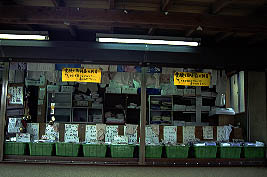
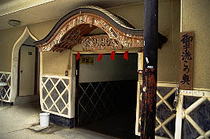
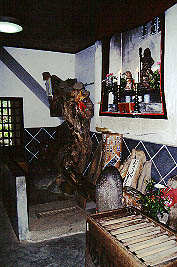
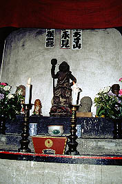
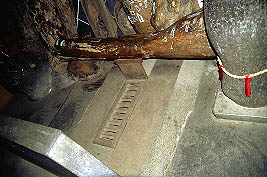

明徳寺/静岡県天城湯ヶ島町
伊豆半島中央部をドライブしているとあちこちで「トイレの神様」なる看板を見かける。あまりにも看板がウルサいので行ってみる。
ここ、明徳寺は東司（トイレ）の神様であるうすさま明王をまつる寺である。
門を潜ると霊験と御利益の肌着と称したオバ下着が売られている。

ズロース、久々に眼にした言葉である。
うすさま明王をまつるのは本堂ではなくて、裏口のようなところ。

これが入口。左はホントのトイレ。

で、内部。床中央の衝立の前にすのこのようなものがある。これが「おまたぎ」。またげば下の世話にならない、との事。すのこの下にはお賽銭がいっぱい落ちてたぞ。

そして何やら意味ありげな形の木を「おさすり」して参拝終了。
「おさすり」はともかく「おまたぎ」の方は参拝の作法としては如何なものか。別にいいんだけど。結構あっけないもんだ。
門前に土産屋が何軒か並ぶ。凄いコピーが並ぶ強精剤屋など曲者揃いの門前市だった。
2000.5.
珍寺大道場 HOME